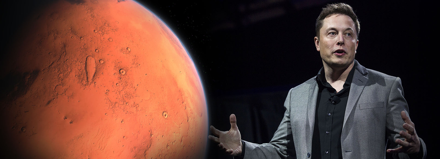
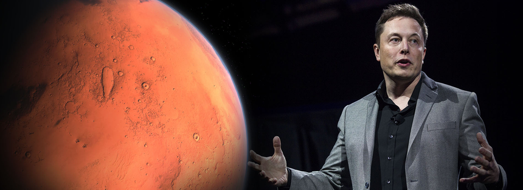

| 일론머스크 헉! | head | 98.1% |
| body | 97.9% | |
| html | 97.9% |
미국의 기업인으로 PayPal의 전신이 된 온라인 결제 서비스 회사 X.com,로켓 제조 회사 겸 민간 우주 기업 스페이스X, 뇌-컴퓨터 인터페이스 회사 뉴럴링크, GPT-3을 개발한 인공지능 회사 OpenAI를 설립했고, 초고속 진공 열차 하이퍼루프 프로젝트를 기획했으며 도지코인의 열광팬이다.
또한 지하 운송 시스템 더 보링 컴퍼니를 설립했으며, 시가 총액 기준으로 전기자동차 회사 테슬라를 세계 최대의 자동차 메이커로 만들었다.